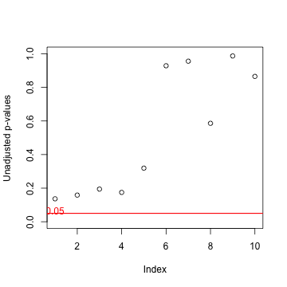

- Multiplicity occurs when performing several statistical inferences simultaneously. (e.g. high dimensional screening studies)
- We usually set a significance level at 0.05.
- which means the acceptable probability to reject a true null hypothesis is 0.05 or less.
- However, when we conduct multiple statistical tests simultaneously, the overall type I error rate is higher than our expectations.
Simulating Multiplicity
Coursera Course Project
J Kim
What is multiplicity?
For example...
- Suppose that we test 10 hypotheses simultaneously at the significance level \(\alpha = 0.05\).
- Assume that the hypotheses are all true and they are independent.
- Then, the probability to retain all hypotheses is
- \((0.95)^{10} = 0.599\)
- Therefore, the probability to reject at least one true null hypothesis is
- \(1 - 0.599 = 0.401\).
- It is much more higher than 0.05.
- But it may be hard for statistical novices, like me, to understand this fact.
- Simulation using R is helpful to get a clue of such a difficult concept.
Simulating multiplicity
df <- numeric() ## Create an imaginary population
columnnames <- character()
for(i in 1 : 10) {
variables <- rnorm(100000)
df <- cbind(df, variables)
columnnames <- c(columnnames, paste("variable_", i))
}
colnames(df) <- columnnames
sample_id <- sample(1 : 100000, size = 30 * 2) ## Sample 60 cases
group_A <- df[sample_id[1 : 30], ] ## Assign the sampled cases to each group
group_B <- df[sample_id[31 : 60], ]
p_val <- numeric() ## Calculate p-values
for(i in 1 : 10) {
temp <- t.test(group_A[, i], group_B[, i], var.equal = TRUE)$p.value
p_val <- c(p_val, temp)
}
p_val_bonferroni <- p.adjust(p_val, method = "bonferroni") ## P-values adjustment
Plotting results


Some p-values are quite close to 0.05 even though two samples are from
the same population. But adjusted p-values through Bonferroni method show more
conservative results than the unadjusted ones.
The application I made, Multiplicity, is designed for the simulation to
visualize the multiple comparisons problem.